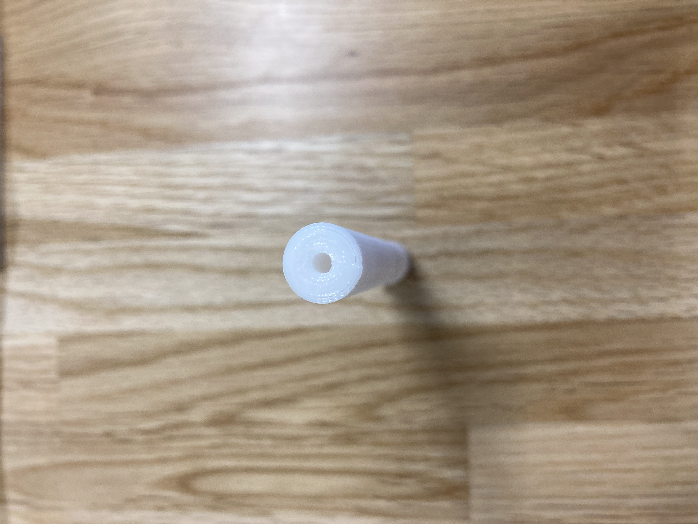

Design for others
班でのアイデア
タバコが減っていくとダサくなるもの
私が作成したものはタバコを吸うたびにピーピー音が鳴り、恥ずかしくダサいというものです。
吸うたびにピーピー大きな音が鳴れば、人前で吸うことも減るのではないかと思います。
コリスのフエラムネというお菓子から制作のアイデアを得ました。
実際は息を吹くより吸ったときの方が綺麗で大きな音が鳴る事が多いようなのでタバコにぴったりだと思いました。
フエラムネの仕組みは空気の流れが穴の両側などにカルマン渦を連続して生じ，それが振動を起こすためなので、
二つの穴が空いているものを作り、それをテープで繋ぎ空洞を作りました。
問題点は短くなっていくタバコにこのような構造を加えて製造できるかどうかです。

